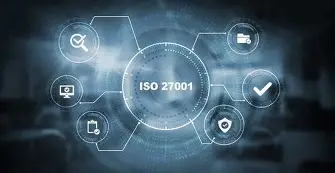

Confidencialidad
Garantiza que la informacion solo sea accesible para las personas y sistemas autorizados.
La ISO/IEC 27001 es el estándar internacional que establece los requisitos para un Sistema de Gestión de Seguridad de la Información (SGSI), permitiendo a las organizaciones proteger sus activos de información y gestionar riesgos de manera sistemática y basada en evidencia.

Garantiza que la informacion solo sea accesible para las personas y sistemas autorizados.
Asegura que los datos sean precisos, completos y no sufran modificaciones no autorizadas.
Lora que la información y los servicios estén accesibles para lo susuarios autorizados siempre que los necesiten.